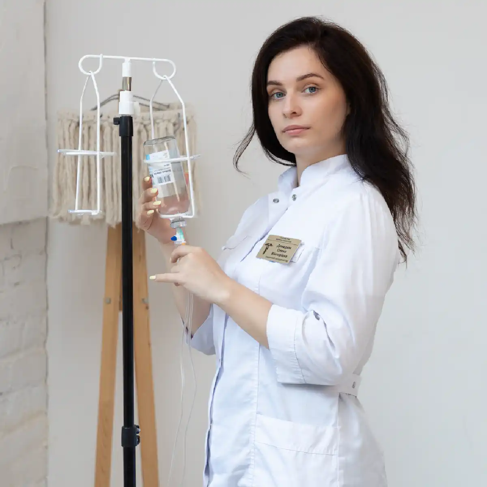

+38(068) 79 72 782
+38(068) 79 72 782Капельница от наркотиков в Чугуеве
Быстрое и безопасное очищение организма


Бесплатная консультация, работаем круглосуточно 24/7
Быстрое и безопасное очищение организма
Наркотическая зависимость — это серьёзная медицинская, психологическая и социальная проблема, которая требует немедленного вмешательства и профессионального подхода. Когда в организме накапливаются токсичные продукты распада наркотических веществ, человек сталкивается с тяжёлыми симптомами интоксикации и абстиненции: слабостью, тревогой, нарушением дыхания, обезвоживанием, скачками давления, болью в мышцах и нарушением сна. В таких ситуациях необходима быстрая и эффективная помощь, и одним из лучших решений является капельница от наркотиков.
В Чугуеве эта процедура помогает максимально быстро очистить организм, стабилизировать жизненно важные функции и вернуть пациенту контроль над состоянием. Медицинская служба UmbrellaPlus предоставляет профессиональную детоксикацию, используя современные инфузионные растворы и индивидуальные схемы лечения. Мы работаем с пациентами любого стажа употребления, включая тяжёлые случаи, когда состояние требует незамедлительной поддержки.
Наркотическая интоксикация развивается после употребления психоактивных веществ и представляет серьёзную угрозу для здоровья и жизни человека. Токсические соединения быстро попадают в кровь, распространяются по организму и поражают жизненно важные системы — центральную нервную систему, сердечно-сосудистую систему, печень, почки и дыхательный центр головного мозга. В ряде случаев негативное воздействие начинается уже через несколько минут после употребления, а выраженность симптомов зависит от типа наркотика, способа введения вещества, дозировки, длительности употребления и общего состояния организма. К наиболее распространённым признакам интоксикации относятся:
Подобные проявления свидетельствуют о серьёзном поражении организма и высоком риске передозировки. Такие состояния требуют немедленного вмешательства врача. Самолечение при наркотической интоксикации опасно: попытки «переждать», принимать сомнительные лекарства или использовать народные методы могут усугубить отравление и привести к необратимым последствиям — повреждению головного мозга, остановке дыхания, коме или летальному исходу. Оптимальная тактика — как можно быстрее обратиться за медицинской помощью или вызвать скорую, особенно если наблюдаются потеря сознания, судороги, нарушение дыхания, сильная слабость или резкие изменения поведения. Своевременная детоксикация, стабилизация жизненных функций и наблюдение специалистов значительно повышают шансы на благоприятный исход и уменьшают риск осложнений.
Передозировка — это состояние, при котором организм уже не способен справиться с токсической нагрузкой, и его жизненно важные системы начинают «отключаться» одна за другой. Чем выше доза и быстрее её всасывание, тем стремительнее развивается угроза жизни. Особенно опасны случаи смешанного употребления — когда наркотики комбинируются с алкоголем, транквилизаторами или психотропными средствами. В таких ситуациях интоксикация усиливается многократно, а риск летального исхода возрастает в разы из-за взаимного угнетения дыхательного и сердечно-сосудистого центров. Помимо перечисленных проявлений, передозировка нередко сопровождается следующими тяжёлыми осложнениями:
Особую опасность представляет непредсказуемость развития передозировки. В ряде случаев симптомы нарастают не сразу, а постепенно — через 30–60 минут или даже спустя несколько часов после употребления. Это происходит, когда вещество медленно всасывается, имеет пролонгированное действие или вступает в химическое взаимодействие с другими препаратами. Внешне человек может казаться просто «уснувшим», вялым или чрезмерно расслабленным, однако в этот момент в его организме уже происходят критические изменения, угрожающие жизни. Отдельного внимания заслуживает фактор толерантности. После перерывов в употреблении даже привычная ранее доза может оказаться смертельно опасной. Организм утрачивает адаптацию, и нервная система реагирует гораздо острее, чем раньше. Именно поэтому передозировки часто случаются после «срывов» или возвращения к употреблению после лечения.
Крайне важно понимать: такие состояния категорически нельзя пытаться купировать самостоятельно. Недопустимо оставлять человека одного, пытаться «привести в чувство» холодной водой, физическим воздействием, давать кофе, алкоголь или неизвестные препараты. Самовольное промывание желудка без медицинских показаний, особенно при нарушении сознания, может привести к аспирации и остановке дыхания. Подобные действия не только не помогают, но и значительно повышают риск трагического исхода.
Капельница от наркотиков — это современный метод интенсивной детоксикационной терапии, который предполагает внутривенное введение лекарственных растворов и препаратов с целью быстрого восстановления организма после употребления психоактивных веществ. Благодаря тому, что медикаменты поступают напрямую в кровоток, минуя желудочно-кишечный тракт, достигается максимально быстрый и выраженный терапевтический эффект. Инфузионная терапия позволяет стабилизировать состояние пациента уже в первые минуты процедуры, что особенно важно при острой интоксикации, абстинентном синдроме или угрозе осложнений. Главная ценность капельницы заключается в её комплексном и системном воздействии на организм. Она не просто способствует выведению токсичных продуктов распада наркотических веществ, но и активно поддерживает работу жизненно важных органов и систем. Правильно подобранный состав инфузии помогает восстановить водно-электролитный баланс, нормализовать артериальное давление, сердечный ритм и дыхание, а также улучшить кровоснабжение головного мозга.
В состав капельницы, как правило, входят детоксикационные растворы, витамины группы B и C, препараты для защиты печени и почек, антиоксиданты, средства для поддержки нервной системы и, при необходимости, седативные или противосудорожные компоненты. Каждое назначение делается строго индивидуально — с учётом вида употребляемого вещества, длительности зависимости, общего состояния пациента и наличия сопутствующих заболеваний. Такой подход позволяет не «перегружать» организм лишними лекарствами и одновременно достичь максимальной эффективности терапии. Инфузионная терапия особенно важна в период ломки, когда организм испытывает сильнейший стресс. Капельница снижает выраженность болевого синдрома, уменьшает тревожность, нормализует сон и общее самочувствие, делая состояние пациента более стабильным и управляемым. Это создаёт физиологическую основу для дальнейшего лечения и психотерапевтической работы, без которой полноценное выздоровление невозможно. Капельница от наркотиков — это не самостоятельное лечение зависимости, а экстренная и поддерживающая медицинская мера. Её задача — безопасно вывести человека из острого состояния, предотвратить тяжёлые осложнения и дать организму ресурс для восстановления. Наиболее высокий результат инфузионная терапия показывает в составе комплексной программы, включающей наблюдение врача-нарколога, психологическую помощь и реабилитацию. Именно такой подход позволяет не только облегчить состояние здесь и сейчас, но и сделать реальный шаг к возвращению к здоровой и трезвой жизни.
Состав капельницы от наркотиков всегда подбирается строго индивидуально, поскольку универсальной схемы детоксикации не существует. Врач-нарколог оценивает не только сам факт употребления психоактивных веществ, но и целый комплекс факторов: тип и длительность приёма наркотика, выраженность интоксикации, возраст и массу тела пациента, степень обезвоживания, состояние сердечно-сосудистой системы, печени, почек и нервной системы, а также наличие хронических заболеваний. Такой персонализированный подход позволяет добиться максимального терапевтического эффекта и свести к минимуму риск осложнений. Как правило, инфузионная терапия включает несколько групп препаратов, каждая из которых выполняет свою важную функцию.
Индивидуальный подбор компонентов капельницы от наркотиков позволяет воздействовать не только на симптомы, но и на причины ухудшения самочувствия. Такой подход делает инфузионную терапию максимально эффективной, безопасной и создаёт прочную физиологическую основу для дальнейшего лечения зависимости и реабилитации.
Стоимость капельницы от наркотиков в Чугуеве начинается от 2499 грн.
Детоксикация — это комплексный медицинский процесс, направленный на очищение организма от наркотических веществ и продуктов их распада, а также на облегчение симптомов абстиненции (ломки). В отличие от поверхностных «очищающих» процедур, профессиональная детоксикация воздействует сразу на несколько систем организма: кровь, нервную систему, обмен веществ, работу сердца, печени и почек.
Основная цель детоксикации — стабилизировать состояние пациента, снизить токсическую нагрузку и предотвратить развитие опасных осложнений, таких как судороги, нарушения дыхания, сердечные сбои и острые психические реакции. Одновременно устраняются наиболее мучительные проявления абстиненции: сильная тревога, бессонница, боли в мышцах и суставах, тошнота, дрожь, скачки давления и пульса. Важно понимать, что детоксикация не является лечением наркомании, а лишь первым и необходимым этапом на пути к выздоровлению. Она создаёт физиологическую основу для дальнейшей работы — психотерапии, медикаментозного лечения и реабилитации, без которых риск срыва остаётся высоким.
Передозировка или длительное злоупотребление прегабалином оказывает выраженное токсическое воздействие на центральную нервную систему и внутренние органы. Наиболее частыми проявлениями становятся нарушение координации движений, шаткость походки, выраженная сонливость, заторможенность, спутанность сознания, снижение концентрации внимания и проблемы с памятью. В более тяжёлых случаях возможны резкие перепады артериального давления, тревожные состояния и угнетение дыхания.
Инфузионная терапия (капельница) при интоксикации прегабалином применяется как эффективный и безопасный способ стабилизации состояния. Внутривенное введение препаратов позволяет ускорить выведение действующего вещества и его метаболитов из крови, снизить токсическую нагрузку на печень и почки, а также поддержать работу нервной системы. Благодаря инфузионной терапии уменьшается головокружение, проходит выраженная слабость и заторможенность, нормализуется работа центральной нервной системы, улучшается ясность мышления и общее самочувствие. Капельница не только облегчает симптомы, но и снижает риск осложнений, создавая условия для дальнейшего восстановления организма и, при необходимости, начала полноценного лечения зависимости.
Налбуфин относится к опиоидным анальгетикам и при неконтролируемом приёме или злоупотреблении может вызывать тяжёлую интоксикацию, угнетение центральной нервной системы и опасные нарушения дыхания. Особенно высокий риск возникает при превышении дозировок, длительном применении или сочетании препарата с алкоголем и другими психоактивными веществами. В таких состояниях организм перестаёт самостоятельно справляться с токсической нагрузкой, что угрожает работе сердца, лёгких и мозга.
Капельница при интоксикации налбуфином применяется как метод интенсивной детоксикационной терапии. Внутривенное введение препаратов позволяет быстрее вывести продукты распада опиоида из крови, снизить их токсическое воздействие и стабилизировать жизненно важные функции. Инфузионная терапия проводится под контролем врача и подбирается индивидуально с учётом состояния пациента. После процедуры, как правило, уменьшается выраженная слабость и заторможенность, улучшается циркуляция крови, нормализуются показатели давления и пульса, становится более стабильным дыхание. Капельница не только облегчает острые симптомы интоксикации, но и создаёт условия для дальнейшего восстановления организма и, при необходимости, начала полноценного лечения лекарственной зависимости под наблюдением специалистов.
Экстази (MDMA) оказывает выраженное токсическое воздействие на организм, в первую очередь нарушая водно-электролитный баланс и работу нервной и сердечно-сосудистой систем. Под его влиянием резко усиливается потоотделение, повышается температура тела, учащается сердцебиение и возрастает риск обезвоживания и перегрева. На фоне интоксикации нередко появляются тревожность, панические реакции, головная боль, мышечные спазмы и судороги, а нервная система быстро истощается.
Капельница при интоксикации экстази применяется как метод экстренной инфузионной терапии, направленной на стабилизацию состояния и предотвращение опасных осложнений. Внутривенное введение растворов позволяет быстро восполнить потерю жидкости и электролитов, нормализовать температуру тела и снизить нагрузку на сердце и сосуды. Детоксикационные препараты ускоряют выведение токсинов и продуктов распада MDMA, уменьшая их вредное влияние на мозг и внутренние органы. После инфузии уменьшается тревожность и внутреннее напряжение, исчезает выраженная головная боль, стабилизируется давление и сердечный ритм, постепенно возвращается чувство спокойствия и контроля над состоянием. Капельница при экстази не только облегчает острые симптомы интоксикации, но и создаёт условия для восстановления нервной системы и предотвращения долгосрочных последствий для здоровья.
Инфузионная терапия при интоксикации или абстиненции после метадона является одним из наиболее эффективных и безопасных способов облегчить состояние пациента в период ломки. Метадон — это синтетический опиоид с длительным периодом действия, поэтому его остатки могут долго сохраняться в организме, поддерживая тяжёлые симптомы отмены. Капельница позволяет ускорить выведение токсинов и продуктов распада препарата, снижая их негативное влияние на внутренние органы и нервную систему.
Основная задача капельницы при метадоновой зависимости — стабилизировать жизненно важные функции организма. Инфузионная терапия помогает нормализовать работу центральной нервной системы, снизить выраженность тревоги, раздражительности и панических состояний, а также уменьшить интенсивные боли в мышцах и суставах, характерные для опиоидной абстиненции. Дополнительно улучшается работа сердечно-сосудистой системы: выравнивается артериальное давление, стабилизируется пульс и уменьшается риск осложнений со стороны сердца. Уже после первой процедуры пациенты отмечают заметное снижение слабости, уменьшение болевого синдрома, появление аппетита и улучшение сна. Постепенно возвращается энергия и способность адекватно воспринимать происходящее, что особенно важно для дальнейшего этапа лечения и отказа от употребления. Капельница при метадоновой абстиненции — это важный первый шаг к стабилизации состояния и началу полноценной реабилитации.
Кокаиновая интоксикация представляет серьёзную угрозу для сердечно-сосудистой и нервной систем. Этот психостимулятор резко повышает нагрузку на сердце и сосуды, вызывает спазм артерий, скачки артериального давления, тахикардию и выраженное психоэмоциональное перевозбуждение. Именно поэтому капельница при употреблении кокаина в первую очередь направлена на стабилизацию жизненно важных функций и снижение риска опасных осложнений.
Инфузионная терапия помогает нормализовать сердечный ритм, мягко снизить артериальное давление и уменьшить вероятность развития аритмий, инфаркта или инсульта. Специально подобранные препараты снимают сосудистый спазм, улучшают кровоснабжение мозга и способствуют восстановлению нормального дыхания. Одновременно капельница снижает выраженность тревоги, внутреннего напряжения и панических атак, которые часто сопровождают кокаиновую интоксикацию. Благодаря капельнице состояние стабилизируется значительно быстрее, чем при ожидании «само пройдёт». Уже после процедуры пациенты отмечают снижение сердцебиения, улучшение дыхания, исчезновение паники и общее чувство спокойствия. Это важный этап не только для снятия острой интоксикации, но и для предотвращения тяжёлых последствий, которые кокаин может оставить даже после однократного употребления.
Амфетаминовая интоксикация сопровождается выраженной перегрузкой всех систем организма. Этот психостимулятор резко усиливает выброс адреналина и дофамина, что приводит к сильному обезвоживанию, учащённому сердцебиению, скачкам артериального давления, перегреву тела и истощению нервной системы. На фоне употребления часто возникают тревога, панические состояния, бессонница и неконтролируемое психомоторное возбуждение, которые могут сохраняться даже после прекращения действия вещества.
Капельница при амфетамине направлена на быстрое восстановление внутреннего баланса организма и безопасное выведение токсичных продуктов распада. Инфузионная терапия восполняет дефицит жидкости и электролитов, снижает концентрацию токсинов в крови и помогает уменьшить чрезмерную стимуляцию нервной системы. Это особенно важно для профилактики аритмий, судорог и острых психотических реакций. Уже в течение 1–2 часов после начала инфузии уменьшается дрожь в теле, исчезает ощущение внутреннего «перегрева», снижается тахикардия и психомоторное возбуждение. Пациент начинает чувствовать спокойствие, появляется возможность уснуть, восстанавливается общее самочувствие. Капельница после амфетамина — это важный этап не только для снятия острого состояния, но и для предотвращения серьёзных осложнений со стороны сердца, сосудов и нервной системы.
ЛСД оказывает мощное воздействие на центральную нервную систему, вызывая ярко выраженные психоэмоциональные реакции: галлюцинации, дезориентацию, тревожность и сильную перегрузку нервной системы. В некоторых случаях наблюдаются скачки давления, учащённое сердцебиение, бессонница и раздражительность. Даже после прекращения действия вещества организм может оставаться в состоянии стресса и повышенной активности, что создаёт риск осложнений для психики и сердца.
Капельница при интоксикации ЛСД направлена на быстрое восстановление физиологического и психоэмоционального равновесия. Инфузионная терапия обеспечивает комплексное воздействие: восполнение жидкости и электролитов, снижение перегрузки нервной системы, восстановление метаболических процессов и нормализацию работы жизненно важных органов. Эффект процедуры проявляется уже через 1–2 часа: снижается тревожность, исчезает внутреннее напряжение, восстанавливается ясность мышления, нормализуется сон и работа сердечно-сосудистой системы. Капельница после ЛСД не только облегчает острые симптомы интоксикации, но и предотвращает развитие осложнений, обеспечивая безопасное восстановление организма и психики.
Синтетические соли вызывают крайне опасное возбуждение нервной системы, психозы, тахикардию и риск судорог. Капельница направлена на быстрое снижение токсического воздействия, восстановление баланса микроэлементов и предотвращение острого психоза. Препараты нормализуют сердечный ритм, улучшают работу мозга, снимают возбуждение и возвращают пациенту способность адекватно воспринимать окружающее. Инфузия помогает стабилизировать сон и предотвращает судорожные реакции.
При интоксикации солями крайне важно не только снять острые симптомы, но и защитить организм от скрытых последствий, которые могут развиваться даже спустя несколько часов после употребления. Токсические соединения оказывают разрушительное воздействие на нервные клетки, вызывая сильный спазм сосудов, нарушение мозгового кровообращения и кислородное голодание тканей. Именно поэтому во время терапии применяются растворы, улучшающие микроциркуляцию, поддерживающие метаболизм мозга и снижающие риск отёка тканей и неврологических осложнений. После стабилизации состояния пациенту обязательно рекомендуется наблюдение у нарколога и психологическая поддержка, поскольку употребление синтетических солей часто приводит к формированию быстрой и тяжёлой зависимости. Ранняя диагностика, детоксикация и последующая реабилитация значительно снижают риск повторных интоксикаций и психозов, помогают восстановить здоровье и вернуться к стабильной и безопасной жизни.
Эффективность капельницы при наркотической интоксикации объясняется её принципом действия — препараты поступают напрямую в кровоток, минуя желудочно-кишечный тракт. Это позволяет добиться гораздо более быстрого и предсказуемого эффекта, чем при приёме таблеток или пероральных растворов. Лекарственные вещества начинают работать уже в первые минуты после начала инфузии, что особенно важно в условиях острой интоксикации, передозировки или выраженной абстиненции. Кроме того, внутривенная инфузия обеспечивает точное дозирование и равномерное распределение препаратов по организму. Это позволяет быстро нормализовать жизненно важные показатели: артериальное давление, сердечный ритм, насыщение крови кислородом, работу печени и почек. Капельница помогает восстановить психоэмоциональное состояние, снижает тревожность, раздражительность, галлюцинаторные проявления и другие последствия употребления наркотиков.
Каждый наркотик по-разному влияет на нервную систему, сердечно-сосудистую активность, психику и обмен веществ. Именно поэтому универсальной капельницы не существует — состав раствора всегда подбирается индивидуально и только специалистом. Разные группы психоактивных веществ вызывают противоположные реакции организма: одни угнетают дыхание и работу мозга, другие — резко повышают давление и вызывают опасное перевозбуждение. Ошибочный выбор препаратов или дозировки в таких ситуациях может не только не помочь, но и значительно ухудшить состояние пациента.
Только опытный врач-нарколог способен корректно оценить клиническую картину: уровень интоксикации, тип употреблённого вещества, наличие сопутствующих заболеваний, возраст, состояние печени, почек и сердечно-сосудистой системы. На основании осмотра, сбора анамнеза и, при необходимости, экспресс-диагностики он определяет, какие препараты необходимы, в какой последовательности их вводить и в каких дозах. Такой подход позволяет обеспечить контролируемое и безопасное воздействие на организм, снизить риск осложнений и добиться максимально быстрого восстановления.
Врач также учитывает возможные лекарственные взаимодействия и противопоказания, подбирает схему инфузии так, чтобы не перегружать сердце и почки, а также корректирует терапию в процессе процедуры в зависимости от реакции пациента. Это особенно важно при смешанной интоксикации — когда наркотики употреблялись одновременно с алкоголем, седативными или психотропными средствами. Именно профессиональный медицинский контроль делает капельницу эффективным и безопасным методом помощи при наркотической интоксикации. Самостоятельные попытки «снять состояние» без участия врача, использование непроверенных схем или случайных препаратов могут привести к тяжёлым последствиям и представляют прямую угрозу для жизни.
Детоксикация — лишь первый шаг в выстраивании долгосрочного пути к трезвости. Чтобы результат был устойчивым, недостаточно просто снять интоксикацию и стабилизировать физическое состояние — требуется целостная программа восстановления, которая затрагивает все сферы жизни человека: медицинскую, психологическую, эмоциональную и социальную. Именно такой комплексный подход позволяет не только устранить последствия употребления наркотиков, но и предотвратить срывы в будущем.
После снятия интоксикации начинается ключевой этап — реабилитация и работа с причинами зависимости. Важно восстановить нервную систему, нормализовать сон, снизить уровень тревожности и стресса, научить пациента справляться с эмоциональными нагрузками без психоактивных веществ. Большое значение имеет психотерапия: она помогает сформировать мотивацию к трезвой жизни, пересмотреть поведенческие модели, восстановить утраченные социальные связи и обрести внутренние ресурсы для дальнейших перемен. Наркологическая служба UmbrellaPlus в Чугуеве предлагает анонимное и конфиденциальное лечение наркомании с использованием современных, доказательных методик. Главная задача программы — не просто временно снять симптомы зависимости, а помочь человеку вернуть здоровье, уверенность в себе, способность осознанно принимать решения и постепенно восстановить утраченные жизненные ориентиры. Поддержка специалистов продолжается и после завершения основного курса — пациент не остаётся один на один со своей проблемой, получая консультации, профилактику срывов и помощь в сложных жизненных ситуациях.
Капельница помогает пациенту пройти наиболее опасный и тяжёлый период — острую интоксикацию и абстиненцию. Она снимает мучительные физические симптомы, уменьшает боли, тремор, слабость, нормализует давление и сердечный ритм, стабилизирует психоэмоциональное состояние и позволяет человеку вновь начать контролировать своё тело и сознание. Благодаря инфузионной терапии снижается риск осложнений, улучшается самочувствие и появляется возможность перейти к следующему этапу лечения без сильного стресса для организма.
Однако это — только начало пути. Детоксикация устраняет последствия употребления, но не решает внутренние причины зависимости. Чтобы тяга к наркотикам не вернулась, необходима системная и последовательная работа над собой при поддержке специалистов. В дальнейшем лечение включает психотерапию, консультирование с психологом и наркологом, формирование новых моделей поведения и навыков саморегуляции, обучение способам справляться со стрессом и эмоциональными перегрузками без употребления психоактивных веществ.
Большую роль играют реабилитационные программы и социальная адаптация. На этом этапе пациент учится заново выстраивать отношения с окружающими, восстанавливать жизненные цели, возвращаться к работе или учёбе, укреплять внутреннюю мотивацию и ответственность за собственное здоровье. Постепенное формирование нового образа жизни — ключевой фактор устойчивого результата: отказ от разрушительных привычек, изменение окружения, поддержка семьи, участие в группах взаимопомощи.
Только комплексный подход — сочетание медицинской помощи, психотерапии, реабилитации и длительного постреабилитационного сопровождения — позволяет достичь устойчивой ремиссии и снизить риск срыва. Важно помнить, что выздоровление — это процесс, требующий времени, терпения и поддержки, но при правильной организации лечения человек получает реальный шанс вернуться к трезвой, стабильной и полноценной жизни.
Капельница от наркотиков в Чугуеве является надёжным, безопасным и быстрым методом помощи при интоксикации, передозировке и тяжёлой ломке. Она помогает очистить организм, восстановить жизненно важные функции и стабилизировать состояние пациента.
Медицинская служба UmbrellaPlus предоставляет профессиональную детоксикацию, индивидуальный подбор препаратов, наблюдение опытных врачей и возможность проведения процедур на дому. Мы работаем анонимно, круглосуточно и гарантируем полную конфиденциальность. Если вы или ваши близкие столкнулись с наркотиками — не ждите ухудшения. Помощь доступна уже сейчас.
Телефон для консультации: +38(050-021-69-57)
Да, мы строго соблюдаем полную конфиденциальность на всех этапах лечения. Информация о пациенте, диагнозе и прохождении терапии не передаётся третьим лицам. Обращение к нам не влечёт постановку на учёт. Вы можете быть уверены в безопасности и анонимности.
Программа лечения разрабатывается индивидуально после консультации со специалистом. Учитываются вид зависимости, её длительность, физическое и психологическое состояние пациента. Такой подход позволяет повысить эффективность терапии и снизить риск срыва. Мы не используем шаблонные решения.
Да, мы сопровождаем пациентов и после основного курса лечения. Проводятся консультации, рекомендации по адаптации и профилактике рецидивов. При необходимости возможна дальнейшая психологическая поддержка. Это помогает сохранить результат и вернуться к полноценной жизни.
Анонимно

Ну в хлопців просто золоті руки й світла голова, мене капали Олексій та Владислав, буквально за декілька сеансів я наче заново народився, до цього пив більше 3х тижнів, не міг зупинитись, дуже радий що знайшов саме цих спеціалістів, всім рекомендую
Анонимно
В течение нескольких лет я злоупотреблял алкоголь, что привело к увольнению с работы и вызвало у меня мысли о суициде. Понимая, что такой образ жизни неприемлем, я обратился за помощью в клинику “Амбрела”. Здесь я смог преодолеть свою зависимость от спиртного благодаря заботливым и опытным врачам, а также эффективной системе лечения. Спустя более года я полностью избавился от желания употреблять алкоголь, и теперь моя жизнь вернулась в норму. Я даже не приближаюсь к спиртному! Благодарю врачей клиники “Амбрела” за их помощь и заботу.
Анонимно
Я обращался за помощью в различные клиники, пытаясь избавиться от своей зависимости от алкоголя, но без особых успехов. Никак не мог справиться с желанием прибегнуть к бутылке, пока друг не посоветовал мне обратиться в центр “Амбрелла”. Я записался на прием и был поражен заботливым отношением к пациентам. Уже прошло два года, и теперь я смотрю на алкоголь с абсолютной равнодушием, активно занимаюсь спортом и улучшил отношения в семье. Благодаря центру “Амбрелла” моя жизнь была спасена от алкогольной зависимости!
Анонимно
Хочу выразить свою благодарность врачам из центра алкоголизма “Амбрела” за то, что они буквально спасли мою жизнь. В течение последнего года я сильно увлекался питьем, и все это привело к катастрофическим последствиям. Хотя я ходил на терапевтические сеансы, но безрезультатно. Тогда я нашел адрес клиники “Амбрела” в интернете, изучил отзывы и информацию о центре, и записался на прием. Там мне сразу предложили методику лечения, которая помогла не только справиться с физической ломкой, но и психической зависимостью от алкоголя. Не буду распространяться, скажу только одно - после пребывания в этой клинике я стал другим человеком, и навсегда забыл, что такое привкус алкоголя. Больше меня не тянет на это! Я искренне верю, что в центре “Амбрела” трудятся настоящие целители душ!
Анонимно
После сложного развода мой сын начал подавлять свою обиду и горе употреблением алкоголя. Он старался скрывать это от меня, но я, как мать, почувствовала, что что-то не так. В конечном итоге, ситуация стала критической. Моя знакомая посоветовала мне обратиться в клинику “Амбрела”. Я была приятно удивлена их работой! Они помогли сыну преодолеть очередной период злоупотребления алкоголем, и с тех пор прошел уже более года, и он совсем не пьет.
Анонимно
Благодаря вашей помощи, моя семья была спасена. Я с трудом уговорила мужа начать лечение, и последний каплей был пьяное ДТП. К счастью, в аварии никто не пострадал, но это был для него сигнал к действию. Он наконец согласился пройти курс лечения на дому, в стационар не хотел ложиться. Лечение было трудным, и были моменты, когда срыв был настолько близок, но благодаря вашему центру Амбрелла мы справились с этим.
Анонимно
Для меня эта клиника стала настоящим спасением! Долгое время я упорно отказывался от лечения, уверен был, что со мной все в порядке. Но к счастью, семья уговорила меня попробовать. И сегодня я чувствую себя невероятно счастливым, осознавая, что мне абсолютно не нужен алкоголь. Огромное спасибо за помощь и поддержку, которые я получил здесь! Я благодарен вам за новую возможность жить полноценной и счастливой жизнью!
Анонимно
Выражаю благодарность ребятам, которые оказали мне помощь и не отвернулись. Уже 10 месяцев я остаюсь чистой. Благодарю за то, что помогли найти новый путь в моей жизни.
Номер телефона:
+380 (68) 797 27 82
+380 (50) 021 69 57
Адрес наркологического центра вашего города уточняйте по
телефону
Работаем в: Киеве, Одессе, Львове, Харькове, Днепре,
Запорожье, Черкассах, Чугуеве, Черноморске, Каменском
Telegram: t.me/umbrellaplus
График работы: Круглосуточно